Get To Know Us
Lab Members
Faculty PI
Rob Jacob
Robert Jacob is a Professor of Computer Science at Tufts University, where his research interests are new interaction modes and techniques and user interface software; his current work focuses on implicit brain-computer interfaces. More information including how to contact can be found at his website.
PhD Students
Anes Kim
Anes is a second year Ph.D. student in the joint program for computer science and cognitive science. Her research interest in brain-computer interfaces and cognitive science stems from how the human brain can be represented as a computer, but also how a computer can mimic that human brain and its processing capabilities. She is currently working on a couple of projects. The first involves evaluating cognitive workload with multi-modal physiological sensors under multi-tasking conditions, and the other investigates the effectiveness of various visual and text presentation formats, such as confusion matrices, used in Bayesian conditional probability problems.
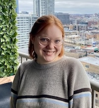
Anna Sheaffer
Anna is a second year PhD student in Computer Science at Tufts. She is interested in using fNIRS to detect metacognitive states to enhance user experience. Previously, she has worked on developing systems with various physiological sensors to detect mental workload while a participant is standing and walking.
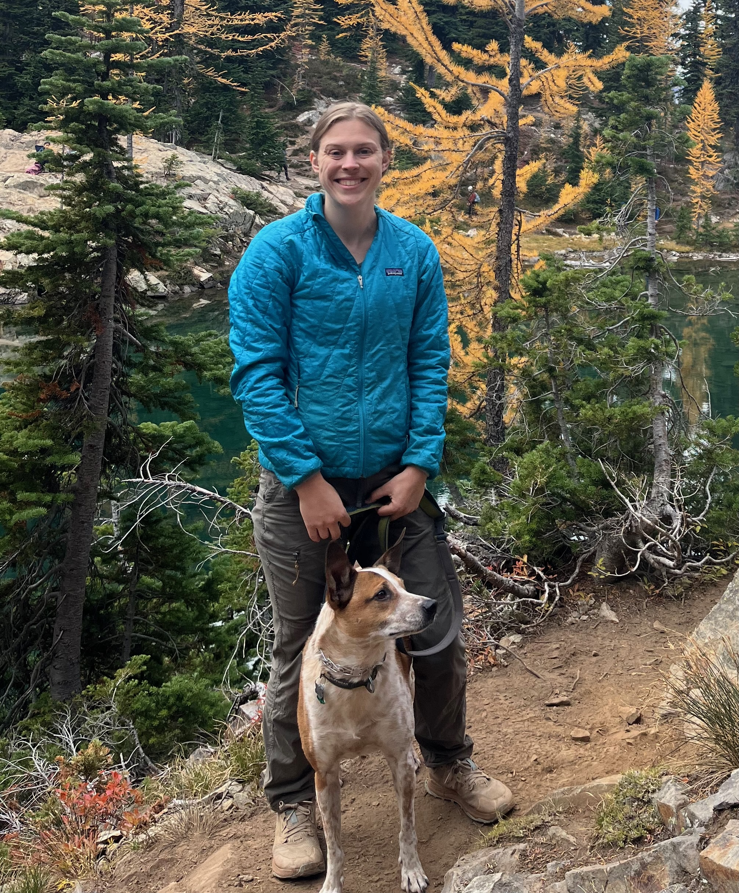
Maddie Brower
Maddie is a first year Computer Science PhD student at Tufts University. Currently, Maddie is looking into how we can use fNIRS data to individualize transcranial electrical stimulation to improve motor learning and/or motor performance. Before coming to Tufts, Maddie worked in industry primarily as a software engineer.
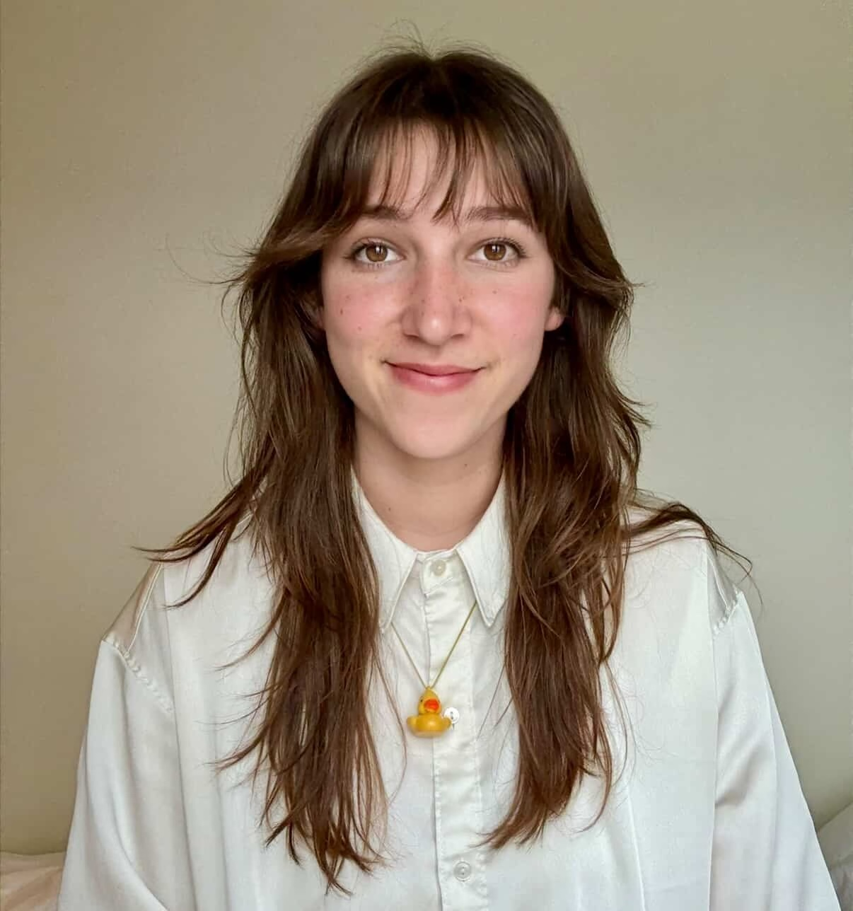
Julia Santaniello
Julia is a second year PhD student in the joint program for Computer Science and Human-Robot Interaction. She is co-advised by Dr. Robert Jacob and Dr. Jivko Sinapov. Her research interests connect brain-computer interfaces and human-in-the-loop reinforcement learning. She is currently working on a framework that utilizes passive neural feedback to train artificial and robotic agents.
Research Assistants
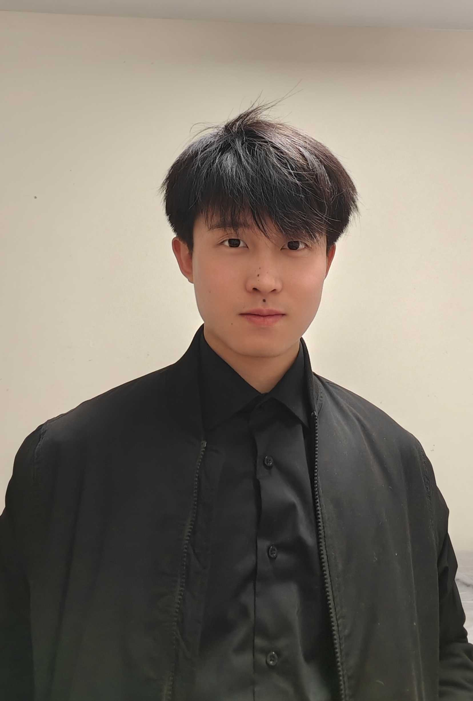
Phillip Li
Phillip is a second year undergraduate student in the school of engineering at Tufts University. Interest in learning how to use computer science techniques in the HCI field, specifically in the mix of fNIRS and EEGS interaction whilst in the VR/AR area. Previously, worked on the Samsung watch data recording, running lab participants, and converting XDF data into readable CSVs for analysis. In his free time, he enjoys playing tennis, exploring places, and loves to travel.

Peter Llamas
Peter is an undergrad student majoring in CS at Tufts University. His research interests focus on the intersection of artificial intelligence and HCI, particularly how AI-driven systems can be designed to better understand, support, and influence human behavior. Outside of the lab, Peter is an active member of JumboCode and Tufts’ Chinese Student Association. He also enjoys building projects, playing piano, and running along the Esplanade.
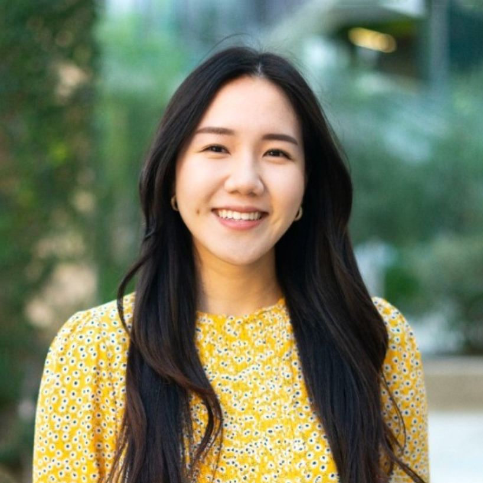
Patrice Pinardo
Patrice is a Computer Science graduate student at Tufts and the lab’s resident artist. She draws on her multidisciplinary background to explore how technical systems can support creativity, expression, accessibility, and learning. Outside of the lab, she enjoys drawing in cafés and playing games of Set or chess with friends.
Alumni
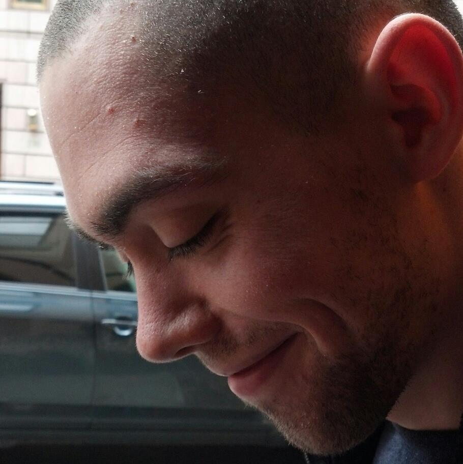
Matthew Russell
Software Engineer
WebsiteDoctor (as of May 2025!) Matthew Russell's research focused on implicit brain interfaces and investigating the capabilities of fNIRS. He is currently working at Acceleron Fusion Inc. More information including how to contact can be found at his website.
Leon Wang
PhD Student
Google ScholarDr. Liang (Leon) Wang is a former lab member at Tufts University's human-computer interaction (HCI) lab. His work applies state-of-the-art machine learning solutions to HCI problems, especially in fNIRS-based implicit Brain-Computer Interfaces (BCI) and emotion recognition.
Beste Filiz Yuksel
Associate Professor
WebsiteDr. Yuksel is a tenure track Assistant Professor in the Computer Science department at the University of San Francisco. She is the founder and director of the HCI Lab where she researches HCI and virtual reality. She received the National Science Foundation CISE Research Infrastructure Award in 2017. She is the Faculty Advisor for the Women in Tech initiative at USF.
Erin Soloveyl
Associate Professor
WebsiteOne focus of Dr. Soloveyl's research is on next-generation interaction techniques, such as brain-computer interfaces, physiological computing, and reality-based interaction. She designs, builds and evaluates interactive computing systems that use machine learning approaches to adapt and support the user's changing cognitive state and context. She also investigates novel paradigms for designing with accessibility in mind, particularly for the Deaf community.

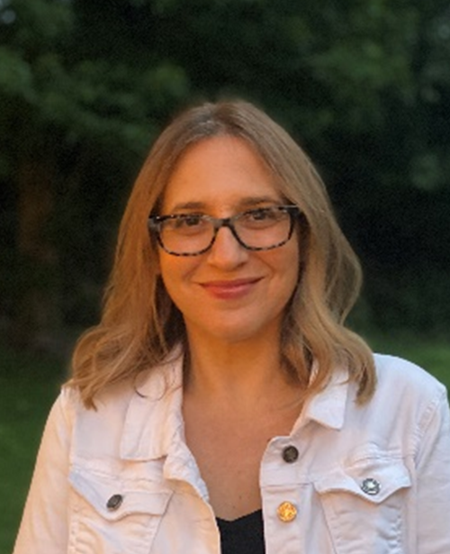
Georgios Christou
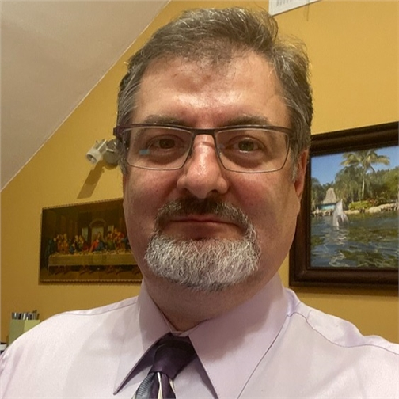
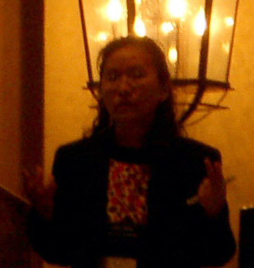
Horn-yeu Shiaw
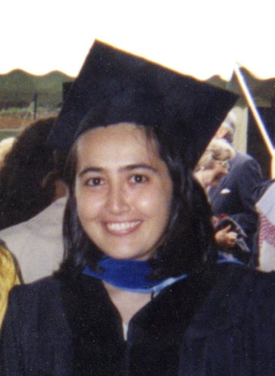
Vildan Tanriverdi
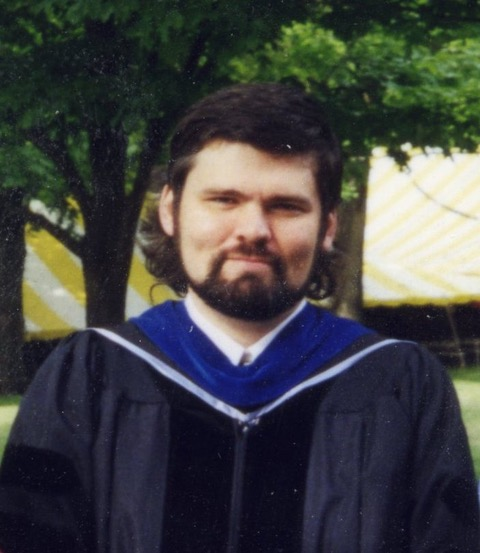